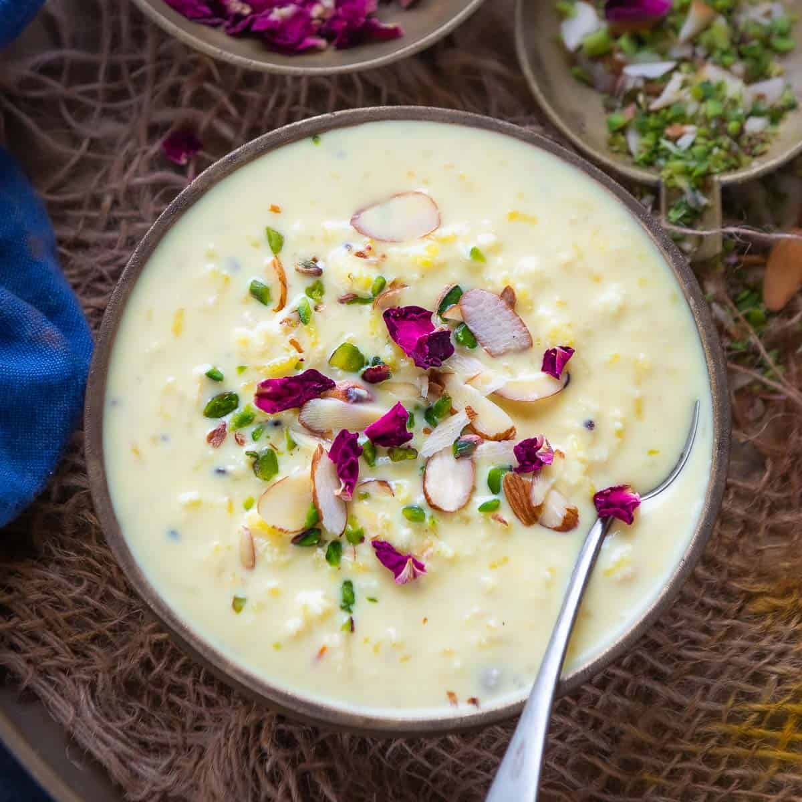

Kheer Recipe

Kheer is a rice pudding made across India, it is simlar to rice payasam made in south Indian homes.
One of the most favourite Indian dessert rice kheer can be made quickly and easily with just a few ingredients.
- 5 Cups milk, full cream
- 1/4 cup rice (washed)
- 1/2 cup sugar
- 10-12 Raisins
- 4 Green cardamoms
- 10-12 almonds (shredded), blanched
- Boil the rice and milk in a deep pan.
- Simmer over low flame, stirring occasionally till the rice is cooked and the milk becomes thick.
- When done add sugar, raisins and cardamoms.
- Stir till sugar gets dissolved properly.
- Transfer into a serving dish and garnish with almonds.
- Serve hot or chilled.